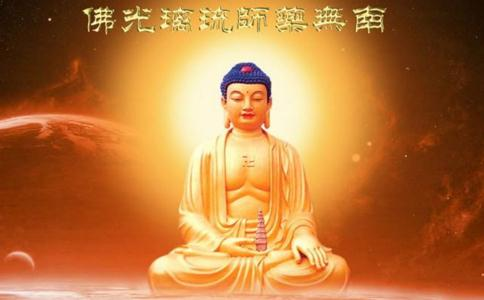

一、如何加持母瓶： 首先，准备干净的母瓶与子瓶两种，若有佛堂者将其供在
另外也可随力参加药师法会，会后若有结缘药师咒水也可以混入母瓶水中。
三、此法的特殊有以下几点：（1）全天候不间断加持：若以20秒念1遍药师咒的念佛机为例；等于一分钟念3遍，一小时念180遍，一天就有4320遍的药师咒加持；若一个月就有129600遍的药师咒加持，一年1555200遍加持。这是以念佛机咒音声波加持的部分。（若有速度更快的念佛机就可以更多遍。可以自己找适合的档案请念佛机厂商制作）
（2）行者亲自加持：行者每天必须持108遍（或更多遍）药师咒加持子瓶，再将子瓶之水倒入母瓶。这样一个月母瓶水就有3240遍行者亲自念诵的效果。
（3）再次加强效果：要使用前将母瓶水倒满子瓶，再于早晚课时于佛前念108遍药师咒心（唵 鞞杀逝鞞杀逝 鞞杀社三没揭帝 莎诃），再特别禀告药师佛这水是为了何人何事祈求，之后就可以使用咒水，如此便能自利利他。
（4）总汇加持：若参加法会结缘或有任何加持过的药师咒水也可以加入母瓶中。
四、药师咒功德开示集： ◎《药师琉璃光七佛本愿功德经》：『复次曼殊室利。彼药师琉璃光如来得菩提时。由本愿力观诸有情。遇众病苦瘦疟干消黄热等病。或被厌魅蛊道所中。或复短命或时横死。欲令是等病苦消除所求愿满。时彼
南谟薄伽伐帝 鞞杀社窭噜 薜琉璃钵喇婆 曷啰阇也 呾他揭多也 阿啰喝帝 三藐三勃陀也呾侄他唵 鞞杀逝鞞杀逝 鞞杀社三没揭帝 莎诃
尔时光中说此咒已。大地震动放大光明。一切众生病苦皆除受安隐乐。
曼殊室利。若见男子女人有病苦者。应当一心为彼病人清净澡漱或食或药或无虫水咒一百八遍与彼服食。所有病苦悉皆消灭。若有所求指心念诵。皆得如意无病延年。命终之后生彼世界。得不退转。乃至菩提。是故曼殊室利若有男子女人。于彼药师琉璃光如来。至心殷重恭敬供养者。常持此咒勿令废忘』
◎《药师如来念诵仪轨》：『若有受持此
◎如果每日持诵药师咒，一切诸佛
◎因为众生的心更堕落，一切也都更加堕落。食物和药物的力量减退，甚至
不过，基于药师诸佛往昔许诺的力量，实际上药师咒在浊世反而更有威力。这是很有必要持诵药师咒的理由之一。
◎药师诸佛往昔曾经许诺，浊世众生所发的愿，必定要成功。每一尊药师佛都发过许多愿，要纾解众生的种种困境。
◎众生甚至只要听到药师佛的圣号或咒语，便不会堕恶趣。药师
◎修药师法及持药师咒，可除病离苦。
◎药师咒具有强大的威力，不仅限于疗愈疾病，也能够净化生者和亡者的业障。如果能够本着菩提心，在临终者或动物耳边，持诵药师佛的圣号和咒语，最好不过了，因为那将使他们不堕恶趣。
◎如果亡者已经听不见了，可以持药师
◎修药师法甚至能够净化亡者，把他们从苦难中救脱出来。
◎持药师佛的咒语，然后在所吃的肉上面，或死尸、死者的骨头上面吹气，都很有利益，可以净除亡者的业障，使他们得以往生
◎如果你是肉食者，应当利益你所吃的被宰杀的动物。在吃肉之前，应当持诵这个强力的净障咒，而且猛力地回向，使那些动物即刻脱离恶趣，往生净土或上界，永不再堕恶趣。
◎即使动物或人已经死了几百年甚至上千年之久，心识还在恶趣，如果持诵药师佛咒之后，在他们的骨头上吹气，照样可以把心识迁移到净土或上界。
◎持诵药师佛咒语之后，也可以吹气在水上、沙上或滑石粉上，再洒在死亡的动物或人的骨头或皮肤上。这么做至少可以缩短亡者在恶趣受苦的时间。
◎修药师法不但对重病的人很有效，还会带来事业、
南无药师会上佛菩萨
南无善名称吉祥王如来
南无宝月智严光音自在王如来
南无金色宝光妙行成就如来
南无无忧最胜吉祥如来
南无法海雷音如来
南无法海胜慧游戏
南无药师琉璃光如来
南无日光遍照菩萨
南无月光遍照菩萨
奉请：
宫毗罗大将 跋折罗大将
迷佉罗大将 安捺罗大将
安怛罗大将 摩涅罗大将
因陀罗大将 波异罗大将
摩呼罗大将 真达罗大将
招度罗大将 鼻羯罗大将